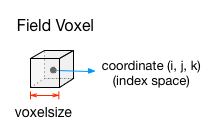
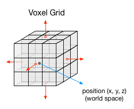
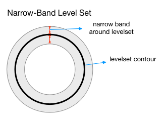

The jit.field set of objects are a family of volumetric field processing components. A field is an object that associates a piece of information with a spatial location. The core object is jit.field, which represents an infinite 3D voxel grid. Conceptually, jit.field is a jit.matrix located in space with the exception that the field can have a value at any spatial location, so the number of cells in any given dimension is not fixed.
Since jit.field voxels are located in space, they have both a location and a size. Position in controlled with the @position and @rotate attributes. Size is controlled with the @voxelsize attribute. All voxels in a jit.field object have the exact same size.
Each voxel in a field has a position defined relative to the field, which is in a coordinate system called index space. Index space coordinates are in integers with the voxel at (0, 0, 0) at the center of the field. Each voxel also has a corresponding position in world space, which is determined by apply the field’s position, rotate, and voxelsize attributes to the voxel’s index space coordinate.
 
Fields are useful for placing and retrieving values from spatial locations. Two common uses for fields are as level sets and vector fields. Level sets describe surfaces through a distance field. The surface of the level set is located where the distance field is zero. This is no different from how jit.gl.isosurface works. The difference is that in jit.field, not every voxel needs to have a value explicitly defined. Only those voxels near the level set surface matter since they mark the location of the surface. Level sets defined this way are called narrow-band level sets.
jit.field.sphere and jit.field.particles generate narrow-band level sets. The size of the narrow band is determined by the @halfwidth attribute, which dictates home many voxels on either side of the level set to calculate the distance function.

Fields can be transformed using the jit.field.op object. It’s just like jit.op except for fields. It supports a number of binary and unary operators:
Not all unary operators work for all field formats. Furthermore, some unary operators take inputs of one format and output a different format. The accepted input and output types of an operator are indicated in the following format: (<planecount> <type>) → (<planecount> <type>). The format to the left of the arrow is the input format. The format to the right is the corresponding output format. The keyword any refers to any planecount or type depending on location.
To read and write to a field with a matrix, use the jit.field.read and jit.field.write objects. Both objects can index fields in either world or index coordinates. If the position matrix is type float32, the position matrix will be assumed to be in world coordinates. If the matrix is type long, it will be assumed to be in index space. When writing to a matrix, the values to be written need to have the same format as the field in terms of planecount and type.
In addition to directly reading from and writing to a field, level set fields can be generated from mesh and converted to meshes. To convert a mesh to a field, use the jit.field.volume object. It can use the matrixoutput of a jit.gl.model object for reading meshes stored on disk. It can also convert jitter matrices representing geometry data like jit.gl.mesh. For example, with
By contrast, the jit.field.mesh object will convert a level set to a mesh. It functions just like jit.gl.isosurface, using an @isolevel parameter to select which contour of the level set to render as geometry. The output can be fed directly into jit.gl.mesh. If @mode is set to mesh, the output will consist of vertex, normal, and index matrices. If @mode is set to particles, it will only output the vertex matrix.